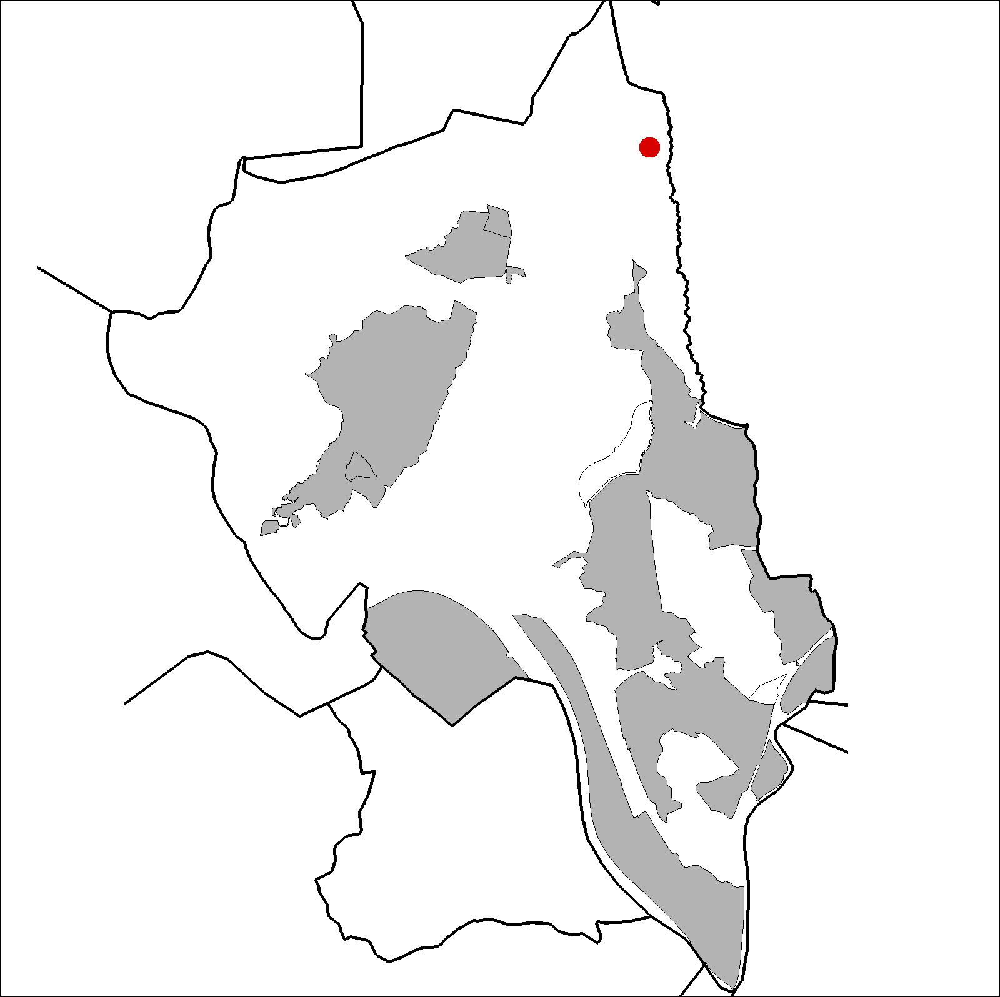
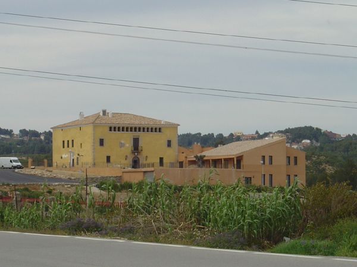

|  |
 |
Nom de l’element: Can Canyadell
Clau d’identificació: B.1.03
Nucli o indret: Entre B151 i torrent de Can Canyadell.
UTM:X=415.279,Y=4.596.095,225m snm.
Referència cadastral: Poligon 3, parcel·la 9501 (08053A00309501)
Règim del sòl: Sòl no urbanitzable.
1.1. Època de construcció i tipologia:
Masia pairal de l’any 1850 aproximadament, de planta quadrada i coberta a quatre aigües de planta baixa, planta pis i graner. Té una disposició d’obertures simètrica tradicional amb una arcada a la porta d’entrada i una galeria d’arcs a la planta de sota coberta. Els murs són de mamposteria i les cobertes inclinades. Els arcs de la galeria són rebaixats i són formats per peces de pedra. Les obertures de la cara nord estan tancades amb reixes de ferro forjat. A la mateixa façana nord es redueix el número d’arcs a la galeria superior. A la cara est hi ha un cos de celler. A la zona oest hi ha un magatzem. A la zona sud hi ha acondicionat un porxo i unes edificacions amb coberta a dues aigües on s’hi ubicaven les quadres. La masia està envoltada per conreus, vinyes i arbres fruiters. Reformada l’any 2005.
1.2. Estat de conservació:
Molt bo, ha estat restaurada.
1.3. Ús actual:
Restauració.
1.4. Accés:
Accés fàcil des de la carretera B151 i per camí forestal. L’electricitat procedeix de la xarxa i l’aigua s’obté d’un pou.
Masia del 1850 de grans dimensions, situada en un entorn rural.
3.1. Usos admesos:
Habitatge rural (màxim 3 habitatges); residencial; hoteler (excepte aparthotel; i amb un màxim de 30 places); oficines i serveis; industria vinculada a productes del camp (industrial, categoria 1ª); educatiu; recreatiu cultural i social; recreatiu de restauració; esportiu.
3.2. Condicions d’ordenació:
Disposa de Pla Especial de protecció del patrimoni (aprov. 11/12/2002 – exp. 2002/005156/B)
3.3. Accés i serveis:
Carretera B151 i per camí forestal. L’electricitat procedeix de la xarxa i l’aigua s’obté d’un pou.
BCIL (Bé Cultural d’Interes Local)